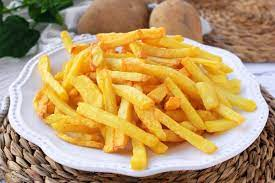

<!DOCTYPE html>
<html lang="en">

<head>
    <meta charset="UTF-8">
    <meta name="viewport" content="width=device-width, initial-scale=1.0">
    <title>Document</title>
    <style>
        body {
            font-Family: arial, verdana;
            color: black;
        }
    </style>
</head>

<body>
    <!--
        Crear un nuevo archivo HTML en el que explicaremos la receta para hacer papas fritas.
    -->
</body>
<h1>
    Papas fritas
    <h4>
        Receta de papas fritas casera
    </h4>
</h1>



<h2>
    Ingredientes

    <h4>
        <ul>
            <li>
                3 o 4 papas (300 gr)
            </li>
            <li>
                Aceite
            </li>
            <li>
                Sal
            </li>
        </ul>
    </h4>
</h2>

<h2>
    Elaboracion (Pasos)
    <h4>
        <ul>
            <li>
                Pelar las papas
            </li>
            <li>
                Cortarlas en baston
            </li>
            <li>
                Calentar aceite en una sarten
            </li>
            <li>
                Cocinar hasta que esten doradas
            </li>
            <li>
                Removerlas del aceite y salar a gusto
            </li>
        </ul>
    </h4>
</h2>

</html>